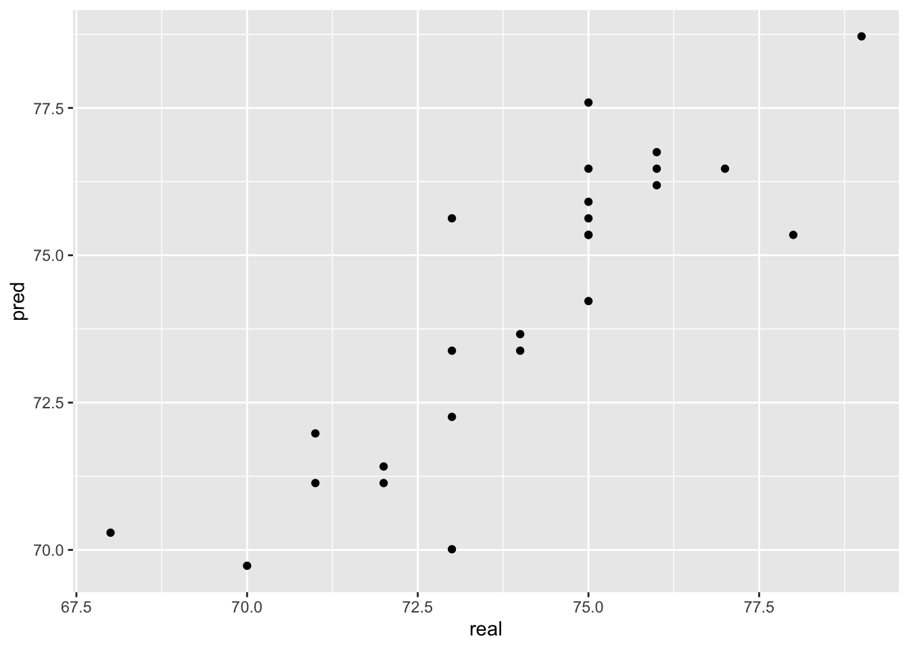
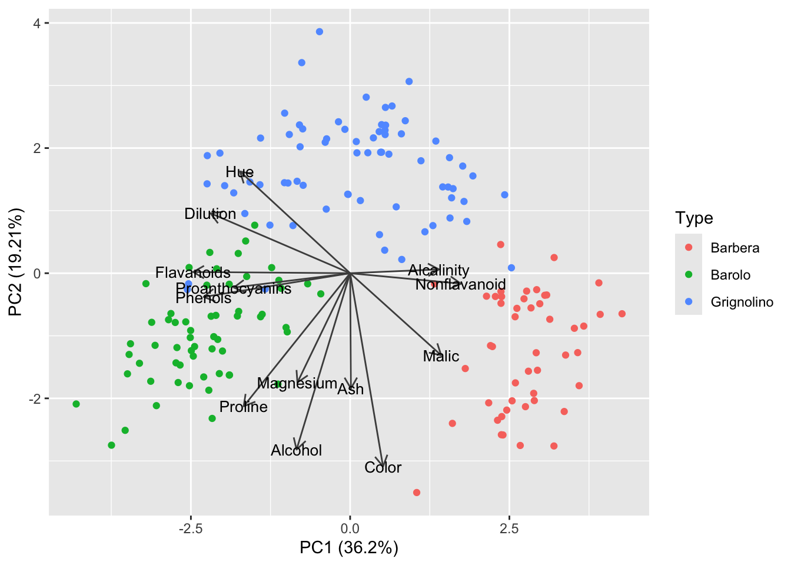
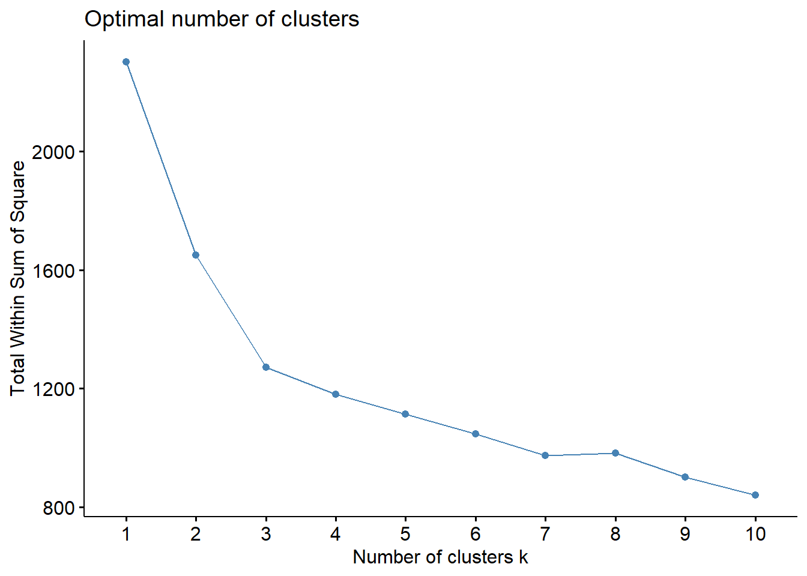
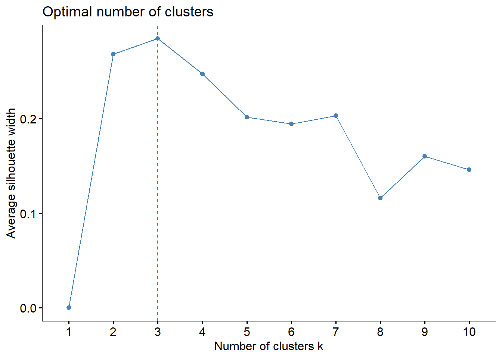
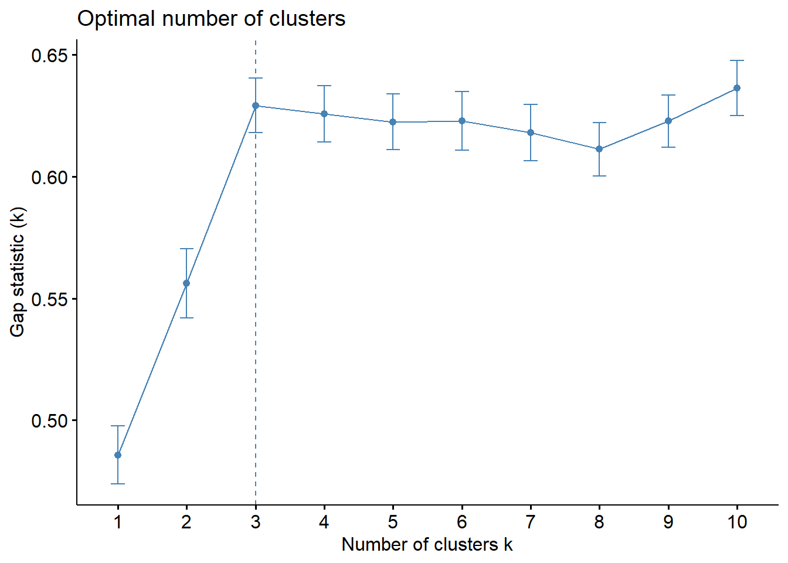
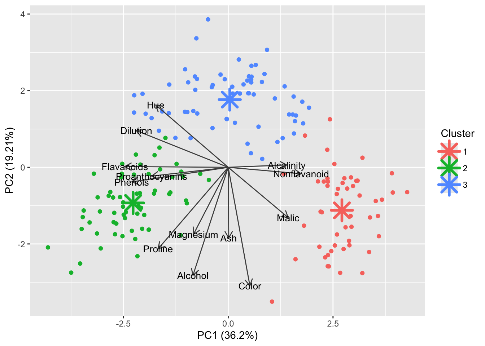

library(tidyverse)
library(caTools)
library(ModelMetrics)
library(ggfortify)
library(readxl)Presentation 5: Intro to Modelling in R
In this section we’ll look at how to define and fit a model in R.
Load packages
Load data
In order to focus on the technical aspects we’ll use a very simple toy dataset. It contains the number of cigarettes smoked per day and how long the person lived. It is inspired by this paper if you want to take a look.
df_smoke <- as_tibble(read.csv('../data/smoking_cat.csv'))
df_smoke# A tibble: 100 × 3
daily_cigarettes life exercise
<int> <int> <int>
1 7 76 0
2 11 73 0
3 27 72 1
4 23 71 0
5 13 74 0
6 11 76 1
7 20 71 0
8 6 76 1
9 23 72 1
10 32 70 2
# ℹ 90 more rowsWe will use this to perform a linear regression.

Linear Regression
Split Data into Training and Test Set
First, we will split our data into a test and a training set. There are numerous ways to do this. We here show sample_frac from dplyr:
# Set seed to ensure reproducibility
set.seed(123)
#add an ID column to keep track of observations
df_smoke$ID <- 1:nrow(df_smoke)
train <- df_smoke %>% sample_frac(.75)
nrow(train)[1] 75head(train)# A tibble: 6 × 4
daily_cigarettes life exercise ID
<int> <int> <int> <int>
1 29 72 1 31
2 16 73 0 79
3 5 78 1 51
4 3 77 0 14
5 4 79 2 67
6 23 71 1 42As you can see, the ID’s in train are shuffled and it only has 75 rows since we asked for 75% of the data. Now all we have to do is identify the other 25%, i.e. the observations not in train. dpylr has a neat function called anti_join for that:
#from df_smoke remove what is in train by checking the ID column
test <- anti_join(df_smoke, train, by = 'ID')
nrow(test)[1] 25head(test)# A tibble: 6 × 4
daily_cigarettes life exercise ID
<int> <int> <int> <int>
1 7 76 0 1
2 11 73 0 2
3 27 72 1 3
4 32 70 2 10
5 8 75 0 11
6 16 75 2 24Defining the model
As stated above, a linear regression model generally has the form of:
\[y=b_0+b_1*x_i\]
Where we refer to \(b_0\) as the intercept and \(b_1\) as the coefficient. There will typically be one coefficient for each predictor. The goal of modelling is to estimate the values of \(b_0\) and all \(b_i\).
We need to tell R which of our variables is the outcome, \(y\) and which predictors \(x_i\) we want to include in the model. This is referred to in documentation as the model’s formula. Have a look:
#the formula is written like so:
lm(y ~ x_1 + x_2 + ...)
#see the help
?lmIn our case, \(y\) is the number of years lived and we have a singular predictor \(x_1\), the number of cigarettes smoked per day. So that will be our model formulation:
#remember to select the training data subset we defined above!
model <- lm(life ~ daily_cigarettes, data = train)Modelling results
By calling lm we have already trained our model! The return of lm() is, just like the return of prcomp(), a named list.
typeof(model)[1] "list"class(model)[1] "lm"names(model) [1] "coefficients" "residuals" "effects" "rank"
[5] "fitted.values" "assign" "qr" "df.residual"
[9] "xlevels" "call" "terms" "model" Lets have a look at the results. The summary gives us a lot of information about the model we trained:
# View model summary
summary(model)
Call:
lm(formula = life ~ daily_cigarettes, data = train)
Residuals:
Min 1Q Median 3Q Max
-2.71479 -1.03035 -0.06517 0.82928 2.84669
Coefficients:
Estimate Std. Error t value Pr(>|t|)
(Intercept) 78.71479 0.26847 293.20 <2e-16 ***
daily_cigarettes -0.28074 0.01351 -20.77 <2e-16 ***
---
Signif. codes: 0 '***' 0.001 '**' 0.01 '*' 0.05 '.' 0.1 ' ' 1
Residual standard error: 1.251 on 73 degrees of freedom
Multiple R-squared: 0.8553, Adjusted R-squared: 0.8533
F-statistic: 431.5 on 1 and 73 DF, p-value: < 2.2e-16It beings with Call which displays the formula used to fit the model.
The Residuals section summarizes the distribution of the residuals, which is the difference between the actual observed \(y\) values and the fitted \(y\) values.
The Coefficients table shows the estimated values for each coefficient including the intercept, along with their standard errors, t-values, and p-values. These help to determine the significance of each predictor. Smaller p-values indicate stronger evidence against the null hypothesis that the true coefficient is zero.
In the bottom section we have some information about how well model fits the training data. The Residual Standard Error (RSE) provides a measure of accuracy as it represents the average size of the residuals. The R-squared value indicates the proportion of variance explained by the model, with the Adjusted R-squared accounting for the number of predictors to prevent overfitting. Finally, the F-statistic and its p-value test whether the model as a whole explains a significant portion of the variance in the response variable (the outcome \(y\)).
Overall, the summary helps us to assess the model fit and identify significant predictors and their effect size (size of the coefficient).
We can extract the model object’s components with $:
model$coefficients (Intercept) daily_cigarettes
78.7147894 -0.2807398 hist(model$residuals, breaks = 30, main = 'Histogram of residuals',
xlab = 'Residual')Model interpretation
What do these results mean? Our model formulation is:
\[life=b_0+b_1*cigarettes\]
And we estimated these values:
model$coefficients (Intercept) daily_cigarettes
78.7147894 -0.2807398 Therefore:
The intercept \(b_0\) is the number of years we estimated a person in this dataset will live if they smoke 0 cigarettes. It is 78.7 years
The coefficient of cigarettes per day is -0.28. This means for every 1 unit increase in cigarettes (one additional cigarette per day) the life expectancy decreases by 0.28 years.
Model performance
We now use our held out test data to evaluate the model performance. For that we will predict life expectancy for the 25 observations in test and compare with the actual values.
#use the fitted model to make predictions for the test data
y_pred <- predict(model, test)
y_pred 1 2 3 4 5 6 7 8
76.74961 75.62665 71.13481 69.73112 76.46887 74.22295 77.59183 70.29260
9 10 11 12 13 14 15 16
73.38073 70.01186 76.46887 75.62665 75.34591 76.46887 73.38073 75.34591
17 18 19 20 21 22 23 24
76.18813 71.41555 73.66147 71.13481 71.97703 75.34591 72.25777 75.90739
25
78.71479 Let’s see how that fits with the known values.
pred <- tibble(pred = y_pred, real = test$life)
ggplot(pred, aes(x=real, y=pred)) +
geom_point()
Not too bad! We usually calculate the mean square error (mse) between predictions and the known true values to numerically evaluate regression performance:
mse(pred$real,pred$pred)[1] 1.742902Our predictions are on average 1.7 years wrong.
Regression with categorical features
Now that we know how to make a simple linear model, how can we include categorical variables and what is the interpretation of their coefficients? To investigate this we include the other predictor variable we have: Exercise level.
distinct(df_smoke, exercise)# A tibble: 3 × 1
exercise
<int>
1 0
2 1
3 2Alright, we have three different levels of exercise. They are: low == 0, moderate == 1 and high == 2. Before we go on, let’s have a look if our data is represented correctly:
str(df_smoke)tibble [100 × 4] (S3: tbl_df/tbl/data.frame)
$ daily_cigarettes: int [1:100] 7 11 27 23 13 11 20 6 23 32 ...
$ life : int [1:100] 76 73 72 71 74 76 71 76 72 70 ...
$ exercise : int [1:100] 0 0 1 0 0 1 0 1 1 2 ...
$ ID : int [1:100] 1 2 3 4 5 6 7 8 9 10 ...We can see that the exercise column is interpreted as an integer. However, it is actually a category! In R categorical variables are known as factors and have their own datatype. Let’s convert exercise to a factor:
df_smoke$exercise <- as.factor(df_smoke$exercise)
str(df_smoke)tibble [100 × 4] (S3: tbl_df/tbl/data.frame)
$ daily_cigarettes: int [1:100] 7 11 27 23 13 11 20 6 23 32 ...
$ life : int [1:100] 76 73 72 71 74 76 71 76 72 70 ...
$ exercise : Factor w/ 3 levels "0","1","2": 1 1 2 1 1 2 1 2 2 3 ...
$ ID : int [1:100] 1 2 3 4 5 6 7 8 9 10 ...As before, before fitting the model we’ll split up the data in train and test. Since we’re using the same seed we should get the same observations, i.e. rows into training and test as above.
# Set seed to ensure reproducibility
set.seed(123)
#add an ID column to keep track of observations
df_smoke$ID <- 1:nrow(df_smoke)
train <- df_smoke %>% sample_frac(.75)
test <- anti_join(df_smoke, train, by = 'ID') And now we extend our previous model formula with the new predictor:
model2 <- lm(life ~ daily_cigarettes + exercise, data = train)summary(model2)
Call:
lm(formula = life ~ daily_cigarettes + exercise, data = train)
Residuals:
Min 1Q Median 3Q Max
-1.58295 -0.53972 -0.01596 0.53773 1.70257
Coefficients:
Estimate Std. Error t value Pr(>|t|)
(Intercept) 77.582954 0.234237 331.216 < 2e-16 ***
daily_cigarettes -0.285521 0.009401 -30.372 < 2e-16 ***
exercise1 1.095475 0.249402 4.392 3.84e-05 ***
exercise2 2.372227 0.260427 9.109 1.48e-13 ***
---
Signif. codes: 0 '***' 0.001 '**' 0.01 '*' 0.05 '.' 0.1 ' ' 1
Residual standard error: 0.8578 on 71 degrees of freedom
Multiple R-squared: 0.9338, Adjusted R-squared: 0.931
F-statistic: 333.7 on 3 and 71 DF, p-value: < 2.2e-16When we check the summary we see that it has two additional coefficients, exercise1 and exercise2. What are they?
Because exercise is a categorical variable it is dummy coded. That means our model formula mathematically looks something like this:
\[y=b_0+b_1*x_1 + b_2 *x_2 + b_3*x_3\]
with:
| Exercise level | \(x_2\) | \(x_3\) |
|---|---|---|
| 0 | 0 | 0 |
| 1 | 1 | 0 |
| 2 | 0 | 1 |
And for our coefficients it means:
model2$coefficients (Intercept) daily_cigarettes exercise1 exercise2
77.5829543 -0.2855213 1.0954747 2.3722266 Intercept== \(b_0\): The life expectancy at 0 cigarettes and exercise level 0daily_cigerettes== \(b_1\): The change in life expectancy for each additional cigarette.exercise1== \(b_2\): The change in life expectancy if the exercise level is 1 (assuming the number of cigarettes stays constant).exercise2== \(b_3\): The change in life expectancy if the exercise level is 2 (assuming the number of cigarettes stays constant).
Why is there no coefficient for exercise level 0 (low amount of exercise)? This case is covered in the Intercept. It is referred to as the reference level of the categorical variable. You can change which level is regarded as the reference and the effect of having this level will always be modelled in the intercept.
Classification
Classification is what we apply when the outcome has two or more classes.
In order to have a categorical outcome, we’ll add a column to our toy data that describes whether the person died before age 75 or not.
df_smoke <- df_smoke %>%
mutate(early_death = factor(ifelse(life < 75, 'yes', 'no')))
df_smoke %>%
count(early_death)# A tibble: 2 × 2
early_death n
<fct> <int>
1 no 49
2 yes 51Training and Test set with class data
Let’s remake our training and test data. This time we have classes that we would like to be in the same ratios in training and test set. Therefore, we cannot just grab 75% of the data as we did before. We’ll use sample.split from caTools to achieve balanced classes:
# Set seed to ensure reproducibility
set.seed(123)
split <- sample.split(df_smoke$early_death, SplitRatio = 0.75)
#split is a vector of true and false values we can now directly apply to our tibble
split [1] TRUE FALSE TRUE TRUE FALSE FALSE TRUE TRUE TRUE TRUE FALSE TRUE
[13] TRUE FALSE TRUE FALSE TRUE TRUE TRUE TRUE FALSE TRUE TRUE FALSE
[25] TRUE TRUE TRUE TRUE TRUE TRUE FALSE TRUE FALSE FALSE FALSE TRUE
[37] FALSE TRUE TRUE FALSE TRUE TRUE TRUE TRUE TRUE TRUE FALSE FALSE
[49] TRUE TRUE TRUE FALSE TRUE TRUE TRUE TRUE TRUE TRUE TRUE TRUE
[61] TRUE FALSE TRUE TRUE FALSE TRUE TRUE FALSE TRUE FALSE TRUE TRUE
[73] TRUE TRUE TRUE TRUE FALSE TRUE FALSE TRUE FALSE TRUE TRUE TRUE
[85] TRUE TRUE TRUE TRUE TRUE TRUE TRUE TRUE FALSE TRUE TRUE TRUE
[97] TRUE TRUE TRUE TRUEtrain <- df_smoke[split,]
test <- df_smoke[!split,] #! negates the vector, so true becomes false and vice verse
count(train,early_death)# A tibble: 2 × 2
early_death n
<fct> <int>
1 no 37
2 yes 38count(test, early_death)# A tibble: 2 × 2
early_death n
<fct> <int>
1 no 12
2 yes 13Now we can perform logistic regression to see whether there is an influence of the number of cigarettes and amount of exercise on the odds of the person dying before 75.
Logistic regression belongs to the family of generalized linear models. They all look like this:
\[ y \sim \beta * X \]
with:
- \(y\) the outcome
- \(\beta\) the coefficient matrix
- \(X\) the matrix of predictors
- \(\sim\) the link function
In a logistic regression model the link function is the logit. In a linear model the link function is the identity function (so ~ becomes =).
Logistic regression: Math
In order to understand what that means we’ll need a tiny bit of math.
We see some issues right of the bat. Our \(y\) is either 0 or 1 (the person is either dead or not). However we cannot model that so instead we will model the probability of the outcome being 1: \(P(earlydeath == 1)\). Except probabilities are bounded between 0 and 1 which is mathematically difficult to impose (it means all \(y\)’s have to be between these two values and how are we gonna enforce that?) So instead, we will model the log-odds of early death:
\[ y = \log(\frac{P(earlydeath == 1)}{1-P(earlydeath == 1)})\]
It may not look like it but we promise you this \(y\) is a well behaved number because it can be anywhere between - infinity and + infinity. So therefore our actual model is:
\[ \log(\frac{P(earlydeath == 1)}{1-P(earlydeath == 1)} = \beta * X\]
And if we want to know what the means for the probability of dying we just take the logit of \(y\) :
\[ P(earlydeath == 1) = \frac{1}{1+ e^{(-y)}} \]
Which makes the link between what we’re actually interested in (people’s chances of dying) and what we’re modelling the logit. End of math.
Model formulation in R
So in order to fit a logistic regression we will use the function for generalized linear models, glm. We will specify that we want logistic regression (using the logit as the link) by setting family = binomial:
model_log <- glm(early_death ~ daily_cigarettes + exercise, data = train, family = "binomial")
summary(model_log)
Call:
glm(formula = early_death ~ daily_cigarettes + exercise, family = "binomial",
data = train)
Coefficients:
Estimate Std. Error z value Pr(>|z|)
(Intercept) -11.0307 4.0190 -2.745 0.00606 **
daily_cigarettes 0.8380 0.2836 2.955 0.00313 **
exercise1 -1.6493 2.0986 -0.786 0.43191
exercise2 -2.5922 2.4751 -1.047 0.29497
---
Signif. codes: 0 '***' 0.001 '**' 0.01 '*' 0.05 '.' 0.1 ' ' 1
(Dispersion parameter for binomial family taken to be 1)
Null deviance: 103.959 on 74 degrees of freedom
Residual deviance: 13.717 on 71 degrees of freedom
AIC: 21.717
Number of Fisher Scoring iterations: 8Model interpretation
We see from looking at the summary that the coefficient of exercise level 1 and level 2 is not significant. This means that we are not confident that doing a high amount of exercise (level 3) has a significant impact on the probability of dying before 75 compare to doing moderate or low amounts of exercise. This does not mean that there can be no influence, merely that we do not have enough data to detect it if it is there.
Are you surprised? Exercise level was significant when we modelled the number of years lived, which is arguably a more fine-grained information than the binary split and perhaps therefore we picked up the influence.
With the number of daily cigarettes predictor we have a high degree of certainty that it influences the probability of dying before 75 (in this dataset!), but what does a coefficient of 0.84 mean?
We know that:
\[ P(earlydeath == 1) = \frac{1}{1+ e^{(-y)}} \]
and (leaving out the exercise level since it’s not significant):
\[ y = \beta_0 + \beta_1 * cigs \]
So how does \(y\) change as \(0.84 * cigs\) becomes larger? Let’s agree that \(y\) becomes larger. What does that mean for the probability of dying? Is \(e^{(-y)}\) a large number if \(y\) is large? Luckily we have a calculator handy
#exp(b) is e^b in R
exp(-1)[1] 0.3678794exp(-10)[1] 4.539993e-05exp(-100)[1] 3.720076e-44We see that \(e^{(-y)}\) becomes increasingly smaller with larger \(y\) which means that
\[ P(earlydeath == 1) = \frac{1}{1+ small} \sim \frac{1}{1} \]
So the larger \(y\) the smaller \(e^{(-y)}\) and the closer we get to \(P(earlydeath == 1)\) being 1. That was a lot of math for: If the coefficient is positive you increase the likelihood of getting the outcome, i.e. dying.
Model comparison
So now we know how to fit linear models and interpret the results. But often there are several predictors we could include or not include, so how do we know that one model is better than another?
There are several ways to compare models. One is the likelihood ratio test which tests whether adding predictors significantly improves model fit by comparing the log-likelihoods of the two models. Another much used comparison is to look at the AIC (Akaike Information Criterion) or BIC (Bayesian Information Criterion). Lower AIC/BIC values generally indicate a better trade-off between model fit and complexity.
For example we have made this model above:
summary(model_log)
Call:
glm(formula = early_death ~ daily_cigarettes + exercise, family = "binomial",
data = train)
Coefficients:
Estimate Std. Error z value Pr(>|z|)
(Intercept) -11.0307 4.0190 -2.745 0.00606 **
daily_cigarettes 0.8380 0.2836 2.955 0.00313 **
exercise1 -1.6493 2.0986 -0.786 0.43191
exercise2 -2.5922 2.4751 -1.047 0.29497
---
Signif. codes: 0 '***' 0.001 '**' 0.01 '*' 0.05 '.' 0.1 ' ' 1
(Dispersion parameter for binomial family taken to be 1)
Null deviance: 103.959 on 74 degrees of freedom
Residual deviance: 13.717 on 71 degrees of freedom
AIC: 21.717
Number of Fisher Scoring iterations: 8But exercise does not have a significant p-value. Perhaps we would have a better model if we only use dialy_cigarettes?
Let’s compare them:
model_reduced <- glm(early_death ~ daily_cigarettes, data = train, family = "binomial")
summary(model_reduced)
Call:
glm(formula = early_death ~ daily_cigarettes, family = "binomial",
data = train)
Coefficients:
Estimate Std. Error z value Pr(>|z|)
(Intercept) -11.7674 3.7944 -3.101 0.00193 **
daily_cigarettes 0.7753 0.2547 3.044 0.00233 **
---
Signif. codes: 0 '***' 0.001 '**' 0.01 '*' 0.05 '.' 0.1 ' ' 1
(Dispersion parameter for binomial family taken to be 1)
Null deviance: 103.959 on 74 degrees of freedom
Residual deviance: 15.006 on 73 degrees of freedom
AIC: 19.006
Number of Fisher Scoring iterations: 8We can use an anova with the Chi-square test to compare the log-likelihood of the two models:
anova(model_log, model_reduced, test = 'Chisq')Analysis of Deviance Table
Model 1: early_death ~ daily_cigarettes + exercise
Model 2: early_death ~ daily_cigarettes
Resid. Df Resid. Dev Df Deviance Pr(>Chi)
1 71 13.717
2 73 15.006 -2 -1.2891 0.5249The p-value of the Chi-square test tells us if there is evidence that the difference in log-likelihoods is significant. If it is not significant, we do not have evidence that one model is a better fit than the other and we would therefore choose the less complex model with fewer predictors since that gives us more statistical power and less overfitting.
Clustering
Clustering is a type of unsupervised learning technique used to group similar data points together based on their features. The goal is to find inherent patterns or structures within the data, e.g. to see whether the data points fall into distinct groups with distinct features or not.
Wine dataset
For this we will use the wine data set as an example:
library(ContaminatedMixt)
data('wine') #load dataset
df_wine <- wine #convert to tibble
df_wine Type Alcohol Malic Ash Alcalinity Magnesium Phenols Flavanoids
1 Barolo 14.23 1.71 2.43 15.6 127 2.80 3.06
2 Barolo 13.20 1.78 2.14 11.2 100 2.65 2.76
3 Barolo 13.16 2.36 2.67 18.6 101 2.80 3.24
4 Barolo 14.37 1.95 2.50 16.8 113 3.85 3.49
5 Barolo 13.24 2.59 2.87 21.0 118 2.80 2.69
6 Barolo 14.20 1.76 2.45 15.2 112 3.27 3.39
7 Barolo 14.39 1.87 2.45 14.6 96 2.50 2.52
8 Barolo 14.06 2.15 2.61 17.6 121 2.60 2.51
9 Barolo 14.83 1.64 2.17 14.0 97 2.80 2.98
10 Barolo 13.86 1.35 2.27 16.0 98 2.98 3.15
11 Barolo 14.10 2.16 2.30 18.0 105 2.95 3.32
12 Barolo 14.12 1.48 2.32 16.8 95 2.20 2.43
13 Barolo 13.75 1.73 2.41 16.0 89 2.60 2.76
14 Barolo 14.75 1.73 2.39 11.4 91 3.10 3.69
15 Barolo 14.38 1.87 2.38 12.0 102 3.30 3.64
16 Barolo 13.63 1.81 2.70 17.2 112 2.85 2.91
17 Barolo 14.30 1.92 2.72 20.0 120 2.80 3.14
18 Barolo 13.83 1.57 2.62 20.0 115 2.95 3.40
19 Barolo 14.19 1.59 2.48 16.5 108 3.30 3.93
20 Barolo 13.64 3.10 2.56 15.2 116 2.70 3.03
21 Barolo 14.06 1.63 2.28 16.0 126 3.00 3.17
22 Barolo 12.93 3.80 2.65 18.6 102 2.41 2.41
23 Barolo 13.71 1.86 2.36 16.6 101 2.61 2.88
24 Barolo 12.85 1.60 2.52 17.8 95 2.48 2.37
25 Barolo 13.50 1.81 2.61 20.0 96 2.53 2.61
26 Barolo 13.05 2.05 3.22 25.0 124 2.63 2.68
27 Barolo 13.39 1.77 2.62 16.1 93 2.85 2.94
28 Barolo 13.30 1.72 2.14 17.0 94 2.40 2.19
29 Barolo 13.87 1.90 2.80 19.4 107 2.95 2.97
30 Barolo 14.02 1.68 2.21 16.0 96 2.65 2.33
31 Barolo 13.73 1.50 2.70 22.5 101 3.00 3.25
32 Barolo 13.58 1.66 2.36 19.1 106 2.86 3.19
33 Barolo 13.68 1.83 2.36 17.2 104 2.42 2.69
34 Barolo 13.76 1.53 2.70 19.5 132 2.95 2.74
35 Barolo 13.51 1.80 2.65 19.0 110 2.35 2.53
36 Barolo 13.48 1.81 2.41 20.5 100 2.70 2.98
37 Barolo 13.28 1.64 2.84 15.5 110 2.60 2.68
38 Barolo 13.05 1.65 2.55 18.0 98 2.45 2.43
39 Barolo 13.07 1.50 2.10 15.5 98 2.40 2.64
40 Barolo 14.22 3.99 2.51 13.2 128 3.00 3.04
41 Barolo 13.56 1.71 2.31 16.2 117 3.15 3.29
42 Barolo 13.41 3.84 2.12 18.8 90 2.45 2.68
43 Barolo 13.88 1.89 2.59 15.0 101 3.25 3.56
44 Barolo 13.24 3.98 2.29 17.5 103 2.64 2.63
45 Barolo 13.05 1.77 2.10 17.0 107 3.00 3.00
46 Barolo 14.21 4.04 2.44 18.9 111 2.85 2.65
47 Barolo 14.38 3.59 2.28 16.0 102 3.25 3.17
48 Barolo 13.90 1.68 2.12 16.0 101 3.10 3.39
49 Barolo 14.10 2.02 2.40 18.8 103 2.75 2.92
50 Barolo 13.94 1.73 2.27 17.4 108 2.88 3.54
51 Barolo 13.05 1.73 2.04 12.4 92 2.72 3.27
52 Barolo 13.83 1.65 2.60 17.2 94 2.45 2.99
53 Barolo 13.82 1.75 2.42 14.0 111 3.88 3.74
54 Barolo 13.77 1.90 2.68 17.1 115 3.00 2.79
55 Barolo 13.74 1.67 2.25 16.4 118 2.60 2.90
56 Barolo 13.56 1.73 2.46 20.5 116 2.96 2.78
57 Barolo 14.22 1.70 2.30 16.3 118 3.20 3.00
58 Barolo 13.29 1.97 2.68 16.8 102 3.00 3.23
59 Barolo 13.72 1.43 2.50 16.7 108 3.40 3.67
60 Grignolino 12.37 0.94 1.36 10.6 88 1.98 0.57
61 Grignolino 12.33 1.10 2.28 16.0 101 2.05 1.09
62 Grignolino 12.64 1.36 2.02 16.8 100 2.02 1.41
63 Grignolino 13.67 1.25 1.92 18.0 94 2.10 1.79
64 Grignolino 12.37 1.13 2.16 19.0 87 3.50 3.10
65 Grignolino 12.17 1.45 2.53 19.0 104 1.89 1.75
66 Grignolino 12.37 1.21 2.56 18.1 98 2.42 2.65
67 Grignolino 13.11 1.01 1.70 15.0 78 2.98 3.18
68 Grignolino 12.37 1.17 1.92 19.6 78 2.11 2.00
69 Grignolino 13.34 0.94 2.36 17.0 110 2.53 1.30
70 Grignolino 12.21 1.19 1.75 16.8 151 1.85 1.28
71 Grignolino 12.29 1.61 2.21 20.4 103 1.10 1.02
72 Grignolino 13.86 1.51 2.67 25.0 86 2.95 2.86
73 Grignolino 13.49 1.66 2.24 24.0 87 1.88 1.84
74 Grignolino 12.99 1.67 2.60 30.0 139 3.30 2.89
75 Grignolino 11.96 1.09 2.30 21.0 101 3.38 2.14
76 Grignolino 11.66 1.88 1.92 16.0 97 1.61 1.57
77 Grignolino 13.03 0.90 1.71 16.0 86 1.95 2.03
78 Grignolino 11.84 2.89 2.23 18.0 112 1.72 1.32
79 Grignolino 12.33 0.99 1.95 14.8 136 1.90 1.85
80 Grignolino 12.70 3.87 2.40 23.0 101 2.83 2.55
81 Grignolino 12.00 0.92 2.00 19.0 86 2.42 2.26
82 Grignolino 12.72 1.81 2.20 18.8 86 2.20 2.53
83 Grignolino 12.08 1.13 2.51 24.0 78 2.00 1.58
84 Grignolino 13.05 3.86 2.32 22.5 85 1.65 1.59
85 Grignolino 11.84 0.89 2.58 18.0 94 2.20 2.21
86 Grignolino 12.67 0.98 2.24 18.0 99 2.20 1.94
87 Grignolino 12.16 1.61 2.31 22.8 90 1.78 1.69
88 Grignolino 11.65 1.67 2.62 26.0 88 1.92 1.61
89 Grignolino 11.64 2.06 2.46 21.6 84 1.95 1.69
90 Grignolino 12.08 1.33 2.30 23.6 70 2.20 1.59
91 Grignolino 12.08 1.83 2.32 18.5 81 1.60 1.50
92 Grignolino 12.00 1.51 2.42 22.0 86 1.45 1.25
93 Grignolino 12.69 1.53 2.26 20.7 80 1.38 1.46
94 Grignolino 12.29 2.83 2.22 18.0 88 2.45 2.25
95 Grignolino 11.62 1.99 2.28 18.0 98 3.02 2.26
96 Grignolino 12.47 1.52 2.20 19.0 162 2.50 2.27
97 Grignolino 11.81 2.12 2.74 21.5 134 1.60 0.99
98 Grignolino 12.29 1.41 1.98 16.0 85 2.55 2.50
99 Grignolino 12.37 1.07 2.10 18.5 88 3.52 3.75
100 Grignolino 12.29 3.17 2.21 18.0 88 2.85 2.99
101 Grignolino 12.08 2.08 1.70 17.5 97 2.23 2.17
102 Grignolino 12.60 1.34 1.90 18.5 88 1.45 1.36
103 Grignolino 12.34 2.45 2.46 21.0 98 2.56 2.11
104 Grignolino 11.82 1.72 1.88 19.5 86 2.50 1.64
105 Grignolino 12.51 1.73 1.98 20.5 85 2.20 1.92
106 Grignolino 12.42 2.55 2.27 22.0 90 1.68 1.84
107 Grignolino 12.25 1.73 2.12 19.0 80 1.65 2.03
108 Grignolino 12.72 1.75 2.28 22.5 84 1.38 1.76
109 Grignolino 12.22 1.29 1.94 19.0 92 2.36 2.04
110 Grignolino 11.61 1.35 2.70 20.0 94 2.74 2.92
111 Grignolino 11.46 3.74 1.82 19.5 107 3.18 2.58
112 Grignolino 12.52 2.43 2.17 21.0 88 2.55 2.27
113 Grignolino 11.76 2.68 2.92 20.0 103 1.75 2.03
114 Grignolino 11.41 0.74 2.50 21.0 88 2.48 2.01
115 Grignolino 12.08 1.39 2.50 22.5 84 2.56 2.29
116 Grignolino 11.03 1.51 2.20 21.5 85 2.46 2.17
117 Grignolino 11.82 1.47 1.99 20.8 86 1.98 1.60
118 Grignolino 12.42 1.61 2.19 22.5 108 2.00 2.09
119 Grignolino 12.77 3.43 1.98 16.0 80 1.63 1.25
120 Grignolino 12.00 3.43 2.00 19.0 87 2.00 1.64
121 Grignolino 11.45 2.40 2.42 20.0 96 2.90 2.79
122 Grignolino 11.56 2.05 3.23 28.5 119 3.18 5.08
123 Grignolino 12.42 4.43 2.73 26.5 102 2.20 2.13
124 Grignolino 13.05 5.80 2.13 21.5 86 2.62 2.65
125 Grignolino 11.87 4.31 2.39 21.0 82 2.86 3.03
126 Grignolino 12.07 2.16 2.17 21.0 85 2.60 2.65
127 Grignolino 12.43 1.53 2.29 21.5 86 2.74 3.15
128 Grignolino 11.79 2.13 2.78 28.5 92 2.13 2.24
129 Grignolino 12.37 1.63 2.30 24.5 88 2.22 2.45
130 Grignolino 12.04 4.30 2.38 22.0 80 2.10 1.75
131 Barbera 12.86 1.35 2.32 18.0 122 1.51 1.25
132 Barbera 12.88 2.99 2.40 20.0 104 1.30 1.22
133 Barbera 12.81 2.31 2.40 24.0 98 1.15 1.09
134 Barbera 12.70 3.55 2.36 21.5 106 1.70 1.20
135 Barbera 12.51 1.24 2.25 17.5 85 2.00 0.58
136 Barbera 12.60 2.46 2.20 18.5 94 1.62 0.66
137 Barbera 12.25 4.72 2.54 21.0 89 1.38 0.47
138 Barbera 12.53 5.51 2.64 25.0 96 1.79 0.60
139 Barbera 13.49 3.59 2.19 19.5 88 1.62 0.48
140 Barbera 12.84 2.96 2.61 24.0 101 2.32 0.60
141 Barbera 12.93 2.81 2.70 21.0 96 1.54 0.50
142 Barbera 13.36 2.56 2.35 20.0 89 1.40 0.50
143 Barbera 13.52 3.17 2.72 23.5 97 1.55 0.52
144 Barbera 13.62 4.95 2.35 20.0 92 2.00 0.80
145 Barbera 12.25 3.88 2.20 18.5 112 1.38 0.78
146 Barbera 13.16 3.57 2.15 21.0 102 1.50 0.55
147 Barbera 13.88 5.04 2.23 20.0 80 0.98 0.34
148 Barbera 12.87 4.61 2.48 21.5 86 1.70 0.65
149 Barbera 13.32 3.24 2.38 21.5 92 1.93 0.76
150 Barbera 13.08 3.90 2.36 21.5 113 1.41 1.39
151 Barbera 13.50 3.12 2.62 24.0 123 1.40 1.57
152 Barbera 12.79 2.67 2.48 22.0 112 1.48 1.36
153 Barbera 13.11 1.90 2.75 25.5 116 2.20 1.28
154 Barbera 13.23 3.30 2.28 18.5 98 1.80 0.83
155 Barbera 12.58 1.29 2.10 20.0 103 1.48 0.58
156 Barbera 13.17 5.19 2.32 22.0 93 1.74 0.63
157 Barbera 13.84 4.12 2.38 19.5 89 1.80 0.83
158 Barbera 12.45 3.03 2.64 27.0 97 1.90 0.58
159 Barbera 14.34 1.68 2.70 25.0 98 2.80 1.31
160 Barbera 13.48 1.67 2.64 22.5 89 2.60 1.10
161 Barbera 12.36 3.83 2.38 21.0 88 2.30 0.92
162 Barbera 13.69 3.26 2.54 20.0 107 1.83 0.56
163 Barbera 12.85 3.27 2.58 22.0 106 1.65 0.60
164 Barbera 12.96 3.45 2.35 18.5 106 1.39 0.70
165 Barbera 13.78 2.76 2.30 22.0 90 1.35 0.68
166 Barbera 13.73 4.36 2.26 22.5 88 1.28 0.47
167 Barbera 13.45 3.70 2.60 23.0 111 1.70 0.92
168 Barbera 12.82 3.37 2.30 19.5 88 1.48 0.66
169 Barbera 13.58 2.58 2.69 24.5 105 1.55 0.84
170 Barbera 13.40 4.60 2.86 25.0 112 1.98 0.96
171 Barbera 12.20 3.03 2.32 19.0 96 1.25 0.49
172 Barbera 12.77 2.39 2.28 19.5 86 1.39 0.51
173 Barbera 14.16 2.51 2.48 20.0 91 1.68 0.70
174 Barbera 13.71 5.65 2.45 20.5 95 1.68 0.61
175 Barbera 13.40 3.91 2.48 23.0 102 1.80 0.75
176 Barbera 13.27 4.28 2.26 20.0 120 1.59 0.69
177 Barbera 13.17 2.59 2.37 20.0 120 1.65 0.68
178 Barbera 14.13 4.10 2.74 24.5 96 2.05 0.76
Nonflavanoid Proanthocyanins Color Hue Dilution Proline
1 0.28 2.29 5.640000 1.040 3.92 1065
2 0.26 1.28 4.380000 1.050 3.40 1050
3 0.30 2.81 5.680000 1.030 3.17 1185
4 0.24 2.18 7.800000 0.860 3.45 1480
5 0.39 1.82 4.320000 1.040 2.93 735
6 0.34 1.97 6.750000 1.050 2.85 1450
7 0.30 1.98 5.250000 1.020 3.58 1290
8 0.31 1.25 5.050000 1.060 3.58 1295
9 0.29 1.98 5.200000 1.080 2.85 1045
10 0.22 1.85 7.220000 1.010 3.55 1045
11 0.22 2.38 5.750000 1.250 3.17 1510
12 0.26 1.57 5.000000 1.170 2.82 1280
13 0.29 1.81 5.600000 1.150 2.90 1320
14 0.43 2.81 5.400000 1.250 2.73 1150
15 0.29 2.96 7.500000 1.200 3.00 1547
16 0.30 1.46 7.300000 1.280 2.88 1310
17 0.33 1.97 6.200000 1.070 2.65 1280
18 0.40 1.72 6.600000 1.130 2.57 1130
19 0.32 1.86 8.700000 1.230 2.82 1680
20 0.17 1.66 5.100000 0.960 3.36 845
21 0.24 2.10 5.650000 1.090 3.71 780
22 0.25 1.98 4.500000 1.030 3.52 770
23 0.27 1.69 3.800000 1.110 4.00 1035
24 0.26 1.46 3.930000 1.090 3.63 1015
25 0.28 1.66 3.520000 1.120 3.82 845
26 0.47 1.92 3.580000 1.130 3.20 830
27 0.34 1.45 4.800000 0.920 3.22 1195
28 0.27 1.35 3.950000 1.020 2.77 1285
29 0.37 1.76 4.500000 1.250 3.40 915
30 0.26 1.98 4.700000 1.040 3.59 1035
31 0.29 2.38 5.700000 1.190 2.71 1285
32 0.22 1.95 6.900000 1.090 2.88 1515
33 0.42 1.97 3.840000 1.230 2.87 990
34 0.50 1.35 5.400000 1.250 3.00 1235
35 0.29 1.54 4.200000 1.100 2.87 1095
36 0.26 1.86 5.100000 1.040 3.47 920
37 0.34 1.36 4.600000 1.090 2.78 880
38 0.29 1.44 4.250000 1.120 2.51 1105
39 0.28 1.37 3.700000 1.180 2.69 1020
40 0.20 2.08 5.100000 0.890 3.53 760
41 0.34 2.34 6.130000 0.950 3.38 795
42 0.27 1.48 4.280000 0.910 3.00 1035
43 0.17 1.70 5.430000 0.880 3.56 1095
44 0.32 1.66 4.360000 0.820 3.00 680
45 0.28 2.03 5.040000 0.880 3.35 885
46 0.30 1.25 5.240000 0.870 3.33 1080
47 0.27 2.19 4.900000 1.040 3.44 1065
48 0.21 2.14 6.100000 0.910 3.33 985
49 0.32 2.38 6.200000 1.070 2.75 1060
50 0.32 2.08 8.900000 1.120 3.10 1260
51 0.17 2.91 7.200000 1.120 2.91 1150
52 0.22 2.29 5.600000 1.240 3.37 1265
53 0.32 1.87 7.050000 1.010 3.26 1190
54 0.39 1.68 6.300000 1.130 2.93 1375
55 0.21 1.62 5.850000 0.920 3.20 1060
56 0.20 2.45 6.250000 0.980 3.03 1120
57 0.26 2.03 6.380000 0.940 3.31 970
58 0.31 1.66 6.000000 1.070 2.84 1270
59 0.19 2.04 6.800000 0.890 2.87 1285
60 0.28 0.42 1.950000 1.050 1.82 520
61 0.63 0.41 3.270000 1.250 1.67 680
62 0.53 0.62 5.750000 0.980 1.59 450
63 0.32 0.73 3.800000 1.230 2.46 630
64 0.19 1.87 4.450000 1.220 2.87 420
65 0.45 1.03 2.950000 1.450 2.23 355
66 0.37 2.08 4.600000 1.190 2.30 678
67 0.26 2.28 5.300000 1.120 3.18 502
68 0.27 1.04 4.680000 1.120 3.48 510
69 0.55 0.42 3.170000 1.020 1.93 750
70 0.14 2.50 2.850000 1.280 3.07 718
71 0.37 1.46 3.050000 0.906 1.82 870
72 0.21 1.87 3.380000 1.360 3.16 410
73 0.27 1.03 3.740000 0.980 2.78 472
74 0.21 1.96 3.350000 1.310 3.50 985
75 0.13 1.65 3.210000 0.990 3.13 886
76 0.34 1.15 3.800000 1.230 2.14 428
77 0.24 1.46 4.600000 1.190 2.48 392
78 0.43 0.95 2.650000 0.960 2.52 500
79 0.35 2.76 3.400000 1.060 2.31 750
80 0.43 1.95 2.570000 1.190 3.13 463
81 0.30 1.43 2.500000 1.380 3.12 278
82 0.26 1.77 3.900000 1.160 3.14 714
83 0.40 1.40 2.200000 1.310 2.72 630
84 0.61 1.62 4.800000 0.840 2.01 515
85 0.22 2.35 3.050000 0.790 3.08 520
86 0.30 1.46 2.620000 1.230 3.16 450
87 0.43 1.56 2.450000 1.330 2.26 495
88 0.40 1.34 2.600000 1.360 3.21 562
89 0.48 1.35 2.800000 1.000 2.75 680
90 0.42 1.38 1.740000 1.070 3.21 625
91 0.52 1.64 2.400000 1.080 2.27 480
92 0.50 1.63 3.600000 1.050 2.65 450
93 0.58 1.62 3.050000 0.960 2.06 495
94 0.25 1.99 2.150000 1.150 3.30 290
95 0.17 1.35 3.250000 1.160 2.96 345
96 0.32 3.28 2.600000 1.160 2.63 937
97 0.14 1.56 2.500000 0.950 2.26 625
98 0.29 1.77 2.900000 1.230 2.74 428
99 0.24 1.95 4.500000 1.040 2.77 660
100 0.45 2.81 2.300000 1.420 2.83 406
101 0.26 1.40 3.300000 1.270 2.96 710
102 0.29 1.35 2.450000 1.040 2.77 562
103 0.34 1.31 2.800000 0.800 3.38 438
104 0.37 1.42 2.060000 0.940 2.44 415
105 0.32 1.48 2.940000 1.040 3.57 672
106 0.66 1.42 2.700000 0.860 3.30 315
107 0.37 1.63 3.400000 1.000 3.17 510
108 0.48 1.63 3.300000 0.880 2.42 488
109 0.39 2.08 2.700000 0.860 3.02 312
110 0.29 2.49 2.650000 0.960 3.26 680
111 0.24 3.58 2.900000 0.750 2.81 562
112 0.26 1.22 2.000000 0.900 2.78 325
113 0.60 1.05 3.800000 1.230 2.50 607
114 0.42 1.44 3.080000 1.100 2.31 434
115 0.43 1.04 2.900000 0.930 3.19 385
116 0.52 2.01 1.900000 1.710 2.87 407
117 0.30 1.53 1.950000 0.950 3.33 495
118 0.34 1.61 2.060000 1.060 2.96 345
119 0.43 0.83 3.400000 0.700 2.12 372
120 0.37 1.87 1.280000 0.930 3.05 564
121 0.32 1.83 3.250000 0.800 3.39 625
122 0.47 1.87 6.000000 0.930 3.69 465
123 0.43 1.71 2.080000 0.920 3.12 365
124 0.30 2.01 2.600000 0.730 3.10 380
125 0.21 2.91 2.800000 0.750 3.64 380
126 0.37 1.35 2.760000 0.860 3.28 378
127 0.39 1.77 3.940000 0.690 2.84 352
128 0.58 1.76 3.000000 0.970 2.44 466
129 0.40 1.90 2.120000 0.890 2.78 342
130 0.42 1.35 2.600000 0.790 2.57 580
131 0.21 0.94 4.100000 0.760 1.29 630
132 0.24 0.83 5.400000 0.740 1.42 530
133 0.27 0.83 5.700000 0.660 1.36 560
134 0.17 0.84 5.000000 0.780 1.29 600
135 0.60 1.25 5.450000 0.750 1.51 650
136 0.63 0.94 7.100000 0.730 1.58 695
137 0.53 0.80 3.850000 0.750 1.27 720
138 0.63 1.10 5.000000 0.820 1.69 515
139 0.58 0.88 5.700000 0.810 1.82 580
140 0.53 0.81 4.920000 0.890 2.15 590
141 0.53 0.75 4.600000 0.770 2.31 600
142 0.37 0.64 5.600000 0.700 2.47 780
143 0.50 0.55 4.350000 0.890 2.06 520
144 0.47 1.02 4.400000 0.910 2.05 550
145 0.29 1.14 8.210000 0.650 2.00 855
146 0.43 1.30 4.000000 0.600 1.68 830
147 0.40 0.68 4.900000 0.580 1.33 415
148 0.47 0.86 7.650000 0.540 1.86 625
149 0.45 1.25 8.420000 0.550 1.62 650
150 0.34 1.14 9.400000 0.570 1.33 550
151 0.22 1.25 8.600000 0.590 1.30 500
152 0.24 1.26 10.800000 0.480 1.47 480
153 0.26 1.56 7.100000 0.610 1.33 425
154 0.61 1.87 10.520000 0.560 1.51 675
155 0.53 1.40 7.600000 0.580 1.55 640
156 0.61 1.55 7.900000 0.600 1.48 725
157 0.48 1.56 9.010000 0.570 1.64 480
158 0.63 1.14 7.500000 0.670 1.73 880
159 0.53 2.70 13.000000 0.570 1.96 660
160 0.52 2.29 11.750000 0.570 1.78 620
161 0.50 1.04 7.650000 0.560 1.58 520
162 0.50 0.80 5.880000 0.960 1.82 680
163 0.60 0.96 5.580000 0.870 2.11 570
164 0.40 0.94 5.280000 0.680 1.75 675
165 0.41 1.03 9.580000 0.700 1.68 615
166 0.52 1.15 6.620000 0.780 1.75 520
167 0.43 1.46 10.680000 0.850 1.56 695
168 0.40 0.97 10.260000 0.720 1.75 685
169 0.39 1.54 8.660000 0.740 1.80 750
170 0.27 1.11 8.500000 0.670 1.92 630
171 0.40 0.73 5.500000 0.660 1.83 510
172 0.48 0.64 9.899999 0.570 1.63 470
173 0.44 1.24 9.700000 0.620 1.71 660
174 0.52 1.06 7.700000 0.640 1.74 740
175 0.43 1.41 7.300000 0.700 1.56 750
176 0.43 1.35 10.200000 0.590 1.56 835
177 0.53 1.46 9.300000 0.600 1.62 840
178 0.56 1.35 9.200000 0.610 1.60 560This dataset contains 178 wine, each corresponding to one of three different cultivars of wine. It has 13 numerical columns that record different features of the wine.
We will try out a popular method, k-means clustering. It works by initializing K centroids and assigning each data point to the nearest centroid. The algorithm then recalculates the centroids as the mean of the points in each cluster, repeating the process until the clusters stabilize. You can see an illustration of the process below. Its weakness is that we need to define the number of centroids, i.e. clusters, beforehand.

Running k-means
For k-means it is very important that the data is numeric and scaled so we will do that before running the algorithm.
# Set seed to ensure reproducibility
set.seed(123)
#run kmeans
kmeans_res <- df_wine %>%
select(where(is.numeric)) %>%
#scale all numeric cols
mutate(across(where(is.numeric), scale)) %>%
kmeans(centers = 4, nstart = 25)
kmeans_resK-means clustering with 4 clusters of sizes 28, 56, 49, 45
Cluster means:
Alcohol Malic Ash Alcalinity Magnesium Phenols
1 -0.7869073 0.04195151 0.2157781 0.3683284 0.43818899 0.6543578
2 0.9580555 -0.37748461 0.1969019 -0.8214121 0.39943022 0.9000233
3 0.1860184 0.90242582 0.2485092 0.5820616 -0.05049296 -0.9857762
4 -0.9051690 -0.53898599 -0.6498944 0.1592193 -0.71473842 -0.4537841
Flavanoids Nonflavanoid Proanthocyanins Color Hue Dilution
1 0.5746004 -0.5429201 0.8888549 -0.7346332 0.2830335 0.60628629
2 0.9848901 -0.6204018 0.5575193 0.2423047 0.4799084 0.76926636
3 -1.2327174 0.7148253 -0.7474990 0.9857177 -1.1879477 -1.29787850
4 -0.2408779 0.3315072 -0.4329238 -0.9177666 0.5202140 0.07869143
Proline
1 -0.5169332
2 1.2184972
3 -0.3789756
4 -0.7820425
Clustering vector:
[1] 2 2 2 2 1 2 2 2 2 2 2 2 2 2 2 2 2 2 2 2 2 1 2 2 2 1 2 2 2 2 2 2 2 2 2 2 2
[38] 2 2 2 2 2 2 1 2 2 2 2 2 2 2 2 2 2 2 2 2 2 2 4 4 4 4 1 4 1 2 4 4 1 4 1 4 1
[75] 1 4 4 4 1 1 4 4 4 3 1 4 4 4 4 4 4 4 4 1 1 1 1 4 1 1 4 4 1 4 4 4 4 4 4 1 1
[112] 4 4 4 4 4 4 4 4 4 1 1 1 1 1 4 1 4 4 4 3 3 3 3 3 3 3 3 3 3 3 3 3 3 3 3 3 3
[149] 3 3 3 3 3 3 3 3 3 3 3 3 3 3 3 3 3 3 3 3 3 3 3 3 3 3 3 3 3 3
Within cluster sum of squares by cluster:
[1] 307.0966 268.5747 302.9915 289.9515
(between_SS / total_SS = 49.2 %)
Available components:
[1] "cluster" "centers" "totss" "withinss" "tot.withinss"
[6] "betweenss" "size" "iter" "ifault" We get a lot of results. kmeans_res$cluster is the cluster assigned to every wine bottle, i.e. row:
kmeans_res$cluster [1] 2 2 2 2 1 2 2 2 2 2 2 2 2 2 2 2 2 2 2 2 2 1 2 2 2 1 2 2 2 2 2 2 2 2 2 2 2
[38] 2 2 2 2 2 2 1 2 2 2 2 2 2 2 2 2 2 2 2 2 2 2 4 4 4 4 1 4 1 2 4 4 1 4 1 4 1
[75] 1 4 4 4 1 1 4 4 4 3 1 4 4 4 4 4 4 4 4 1 1 1 1 4 1 1 4 4 1 4 4 4 4 4 4 1 1
[112] 4 4 4 4 4 4 4 4 4 1 1 1 1 1 4 1 4 4 4 3 3 3 3 3 3 3 3 3 3 3 3 3 3 3 3 3 3
[149] 3 3 3 3 3 3 3 3 3 3 3 3 3 3 3 3 3 3 3 3 3 3 3 3 3 3 3 3 3 3And kmeans_res$centers shows us at which values the centroids are:
kmeans_res$centers Alcohol Malic Ash Alcalinity Magnesium Phenols
1 -0.7869073 0.04195151 0.2157781 0.3683284 0.43818899 0.6543578
2 0.9580555 -0.37748461 0.1969019 -0.8214121 0.39943022 0.9000233
3 0.1860184 0.90242582 0.2485092 0.5820616 -0.05049296 -0.9857762
4 -0.9051690 -0.53898599 -0.6498944 0.1592193 -0.71473842 -0.4537841
Flavanoids Nonflavanoid Proanthocyanins Color Hue Dilution
1 0.5746004 -0.5429201 0.8888549 -0.7346332 0.2830335 0.60628629
2 0.9848901 -0.6204018 0.5575193 0.2423047 0.4799084 0.76926636
3 -1.2327174 0.7148253 -0.7474990 0.9857177 -1.1879477 -1.29787850
4 -0.2408779 0.3315072 -0.4329238 -0.9177666 0.5202140 0.07869143
Proline
1 -0.5169332
2 1.2184972
3 -0.3789756
4 -0.7820425For example the center of cluster 1 is placed at the coordinates -0.79 for Alcohol, 0.04 for Malic Acid, 0.22 for Ash and so on. Since our data has 13 dimensions, i.e. features, the cluster centers also do.
This is not super practical if we would like to visually inspect the clustering since we cannot plot in 13 dimensions. How could we solve this?
Visualizing k-means results
We would like to see where our wine bottles and their clusters lie in a low-dimensional space so we will calculate a PCA of the wine data and map the cluster centers to the PCA space.
Since we want the PCA space and the clustering to have the same mapping we’ll scale the data before running prcomp(). Basically we are making sure that the PCA is calculated on the same data as we passed into the clustering algorithm.
pca_wine <- df_wine %>%
select(where(is.numeric)) %>%
#scale all numeric cols
mutate(across(where(is.numeric), scale)) %>%
prcomp()Let’s have a look. Since there is no missing data in this set we can easily use the original dataframe to color by wine type:
autoplot(pca_wine, data = df_wine, color = 'Type',
loadings = TRUE, loadings.colour = "grey30",
loadings.label.colour = "black",
loadings.label = TRUE, loadings.label.size = 3.5,
scale = 0)
Now we would like to add the cluster centriods to the plot. Just as a wine bottle with 13 dimensions has a certain PC1/PC2 coordinate, the centriod also does:
#this is the first wine bottle in the set
df_wine[1,] Type Alcohol Malic Ash Alcalinity Magnesium Phenols Flavanoids
1 Barolo 14.23 1.71 2.43 15.6 127 2.8 3.06
Nonflavanoid Proanthocyanins Color Hue Dilution Proline
1 0.28 2.29 5.64 1.04 3.92 1065#this bottle is placed at -3.3/1.4 in the PCA plot
pca_wine$x[1,] PC1 PC2 PC3 PC4 PC5 PC6
-3.30742097 -1.43940225 -0.16527283 -0.21502463 -0.69109335 -0.22325037
PC7 PC8 PC9 PC10 PC11 PC12
0.59474883 0.06495586 -0.63963836 -1.01808396 0.45029317 -0.53928914
PC13
0.06605231 We can find the PC1/PC2 coordinates of cluster 1, 2 and 3 by putting their position in the original 13-dim space into the PCA object:
#project cluster centers from kmeans into the pca space
centers_pca <- predict(pca_wine, newdata = kmeans_res$centers)
centers_pca PC1 PC2 PC3 PC4 PC5 PC6
1 -1.0206234 0.8723669 1.09853134 0.60290901 -0.7830261 0.09575498
2 -2.3751274 -0.9408631 -0.32103480 -0.10604257 0.2867197 -0.19871649
3 2.7362113 -1.2107751 -0.17674684 0.07667507 -0.0919792 0.10663848
4 0.6113385 1.9464455 -0.09156296 -0.32666993 0.2305646 0.07159330
PC7 PC8 PC9 PC10 PC11 PC12
1 0.186100194 0.136838314 -0.0104191856 0.13765106 0.09655731 0.0858676784
2 -0.008947737 0.005075841 0.0739699820 -0.06932845 -0.01239409 -0.0008655842
3 -0.072766741 -0.040644444 0.0002573087 0.05571503 0.00485592 -0.0042899679
4 -0.025425819 -0.047203159 -0.0858486648 -0.06004162 -0.04994390 -0.0476803079
PC13
1 0.09281421
2 -0.04132451
3 0.06520735
4 -0.07732857kmeans_res$centers Alcohol Malic Ash Alcalinity Magnesium Phenols
1 -0.7869073 0.04195151 0.2157781 0.3683284 0.43818899 0.6543578
2 0.9580555 -0.37748461 0.1969019 -0.8214121 0.39943022 0.9000233
3 0.1860184 0.90242582 0.2485092 0.5820616 -0.05049296 -0.9857762
4 -0.9051690 -0.53898599 -0.6498944 0.1592193 -0.71473842 -0.4537841
Flavanoids Nonflavanoid Proanthocyanins Color Hue Dilution
1 0.5746004 -0.5429201 0.8888549 -0.7346332 0.2830335 0.60628629
2 0.9848901 -0.6204018 0.5575193 0.2423047 0.4799084 0.76926636
3 -1.2327174 0.7148253 -0.7474990 0.9857177 -1.1879477 -1.29787850
4 -0.2408779 0.3315072 -0.4329238 -0.9177666 0.5202140 0.07869143
Proline
1 -0.5169332
2 1.2184972
3 -0.3789756
4 -0.7820425Let’s make this into a dataframe and add labels:
#project cluster centers from kmeans into the pca space
centers_pca <- predict(pca_wine, newdata = kmeans_res$centers) %>% as.data.frame()
# Label clusters
centers_pca$cluster <- as.factor(1:nrow(centers_pca))
centers_pca PC1 PC2 PC3 PC4 PC5 PC6
1 -1.0206234 0.8723669 1.09853134 0.60290901 -0.7830261 0.09575498
2 -2.3751274 -0.9408631 -0.32103480 -0.10604257 0.2867197 -0.19871649
3 2.7362113 -1.2107751 -0.17674684 0.07667507 -0.0919792 0.10663848
4 0.6113385 1.9464455 -0.09156296 -0.32666993 0.2305646 0.07159330
PC7 PC8 PC9 PC10 PC11 PC12
1 0.186100194 0.136838314 -0.0104191856 0.13765106 0.09655731 0.0858676784
2 -0.008947737 0.005075841 0.0739699820 -0.06932845 -0.01239409 -0.0008655842
3 -0.072766741 -0.040644444 0.0002573087 0.05571503 0.00485592 -0.0042899679
4 -0.025425819 -0.047203159 -0.0858486648 -0.06004162 -0.04994390 -0.0476803079
PC13 cluster
1 0.09281421 1
2 -0.04132451 2
3 0.06520735 3
4 -0.07732857 4Alright! The last step is to add these 4 points, one for each cluster, to the autoplot. Did you know you can add ggplot geoms to autoplots?
autoplot(pca_wine, data = df_wine, color = 'Type',
loadings = TRUE, loadings.colour = "grey30",
loadings.label.colour = "black",
loadings.label = TRUE, loadings.label.size = 3.5,
scale = 0) +
# Cluster centers
geom_point(data = centers_pca, aes(x = PC1, y = PC2, color = cluster),
shape = 8, size = 6, stroke = 2)
We are still coloring the PCA plot by the known wine type. Let’s switch it to instead display which cluster each bottle has been assigned to by k-means:
#add cluster info to the dataframe
df_wine$Cluster <- factor(kmeans_res$cluster)
autoplot(pca_wine, data = df_wine, color = 'Cluster',
loadings = TRUE, loadings.colour = "grey30",
loadings.label.colour = "black",
loadings.label = TRUE, loadings.label.size = 3.5,
scale = 0) +
# Cluster centers
geom_point(data = centers_pca, aes(x = PC1, y = PC2, color = cluster),
shape = 8, size = 6, stroke = 2)
Well the centroids are in the middle of their respective clusters but this does not look ideal. Perhaps 4 is not the best number of clusters for this dataset.
Optimal number of clusters
There are several ways to investigate the ideal number of clusters and fviz_nbclust from the factoextra package provides three of them:
The so-called elbow method observes how the sum of squared errors (sse) changes as we vary the number of clusters. This is also sometimes referred to as “within sum of square” (wss).
library(factoextra)Welcome! Want to learn more? See two factoextra-related books at https://goo.gl/ve3WBadf_wine %>%
select(where(is.numeric)) %>%
#scale all numeric cols
mutate(across(where(is.numeric), scale)) %>%
fviz_nbclust(kmeans, method = "wss")
The silhouette coefficient is a measure of cluster cohesion and separation. It quantifies how well a data point fits into its assigned cluster, by looking at how close it is to other points in its cluster and how far from points of other clusters. You need to have at least 2 clusters for the silhouette coefficient to be defined.
Unlike the elbow of the sums of square errors, the silhouette score is supposed to peak:
df_wine %>%
select(where(is.numeric)) %>%
#scale all numeric cols
mutate(across(where(is.numeric), scale)) %>%
fviz_nbclust(kmeans, method = "silhouette")
The gap statistic compares the within-cluster variation (how compact the clusters are) for different values of K to the expected variation under a null reference distribution (i.e., random clustering).
df_wine %>%
select(where(is.numeric)) %>%
#scale all numeric cols
mutate(across(where(is.numeric), scale)) %>%
fviz_nbclust(kmeans, method = "gap_stat")
All three of them tell us there should be three clusters and we also know there are three cultivars of wine in the dataset. Let’s redo k-means with three centroids.
# Set seed to ensure reproducibility
set.seed(123)
#run kmeans
kmeans_res <- df_wine %>%
select(where(is.numeric)) %>%
#scale all numeric cols
mutate(across(where(is.numeric), scale)) %>%
kmeans(centers = 3, nstart = 25)
#project cluster centers from kmeans into the pca space
centers_pca <- predict(pca_wine, newdata = kmeans_res$centers) %>% as.data.frame()
# Label clusters
centers_pca$cluster <- as.factor(1:nrow(centers_pca))
centers_pca PC1 PC2 PC3 PC4 PC5 PC6
1 2.71238444 -1.1224849 -0.238420685 0.06228125 -0.07346875 0.09964414
2 -2.26979079 -0.9294322 0.001523733 -0.13511700 0.13453261 -0.21766922
3 0.03685265 1.7672542 0.185615130 0.08001400 -0.07067870 0.12944063
PC7 PC8 PC9 PC10 PC11 PC12
1 -0.060213318 -0.007367207 -0.01997059 0.06129547 0.008093155 0.003445464
2 0.051963343 0.024894027 0.05014407 -0.07446923 -0.021230820 -0.007417378
3 -0.002320739 -0.017964647 -0.03216049 0.02293882 0.013900922 0.004371673
PC13 cluster
1 0.050408713 1
2 -0.050476861 2
3 0.008595707 3#add updated cluster info to the dataframe
df_wine$Cluster <- factor(kmeans_res$cluster)
autoplot(pca_wine, data = df_wine, color = 'Cluster',
loadings = TRUE, loadings.colour = "grey30",
loadings.label.colour = "black",
loadings.label = TRUE, loadings.label.size = 3.5,
scale = 0) +
# Cluster centers
geom_point(data = centers_pca, aes(x = PC1, y = PC2, color = cluster),
shape = 8, size = 6, stroke = 2)
Indeed this looks better!
That concludes our foray into modelling for now and it’s time for the exercise.